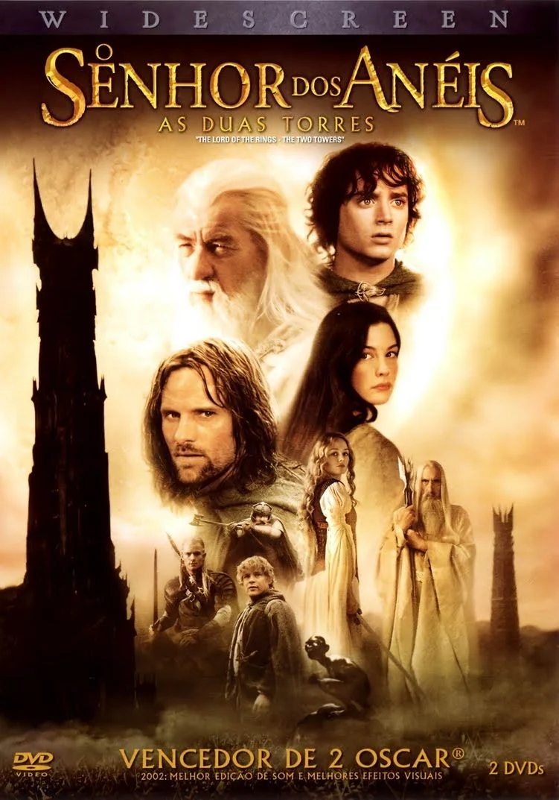
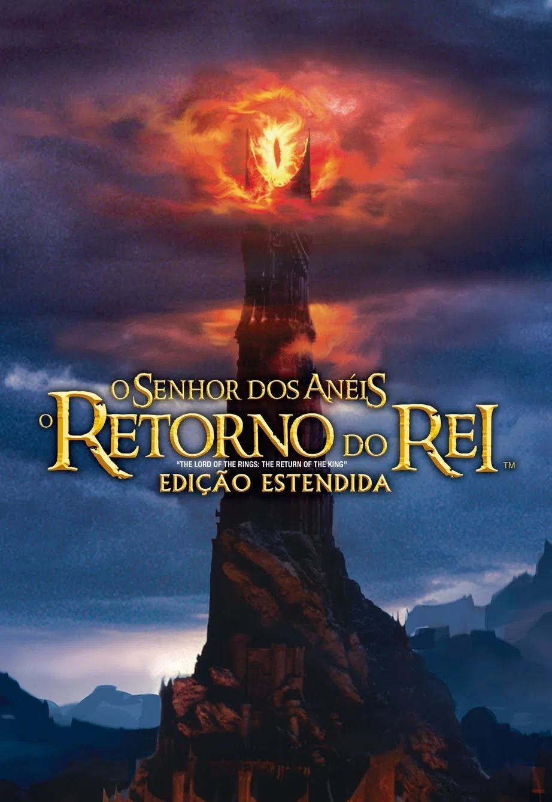
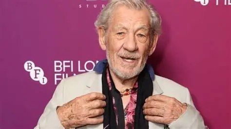
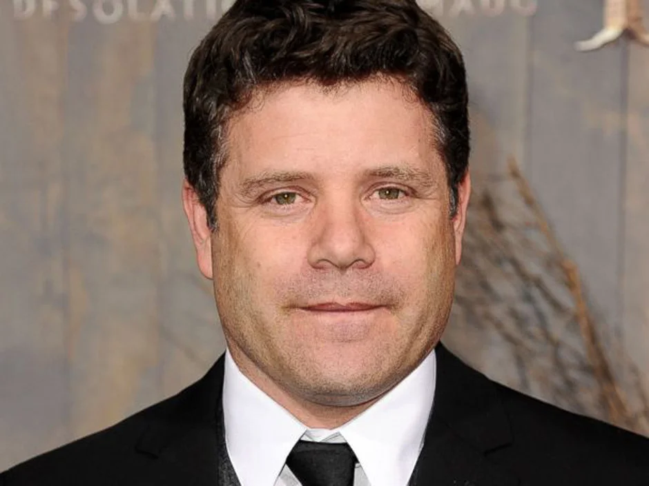
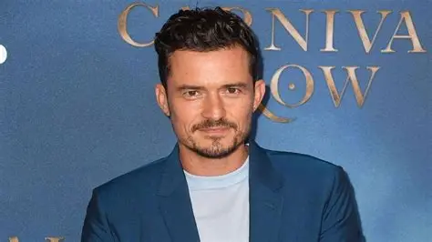
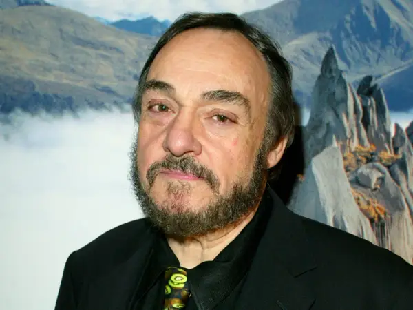

Senhor dos Aneis
Sinopse Geral
The Lord of the Rings é uma trilogia de filmes épicos de alta fantasia e aventura dirigida por Peter Jackson. Os filmes são baseados no romance The Lord of the Rings de J. R. R. Tolkien e têm os mesmos títulos dos três volumes do romance: The Fellowship of the Ring (2001), The Two Towers (2002) e The Return of the King (2003). Produzida e distribuída pela New Line Cinema com a coprodução da WingNut Films de Jackson, a série conta com um elenco coral. Ambientados no mundo fictício de Terra-média, os filmes acompanham o hobbit Frodo Baggins enquanto ele e a Sociedade do Anel embarcam em uma missão para destruir o Um Anel e derrotar seu criador, o Senhor das Trevas Sauron. A Sociedade acaba se separando e Frodo continua a missão com seu fiel companheiro Sam e, eventualmente, o traiçoeiro Gollum. Enquanto isso, Aragorn, herdeiro exilado do trono de Gondor, junto com o elfo Legolas, o anão Gimli, Merry, Pippin, Boromir e o mago Gandalf, unem-se para salvar os Povos Livres da Terra-média das forças de Sauron e reuni-los na Guerra do Anel para ajudar Frodo distraindo a atenção de Sauron.
Filmes


Elenco Principal

Elijah Wood
teste

Ian McKellen
Gandalf

Viggo Mortensen
Aragorn

Sean Astin
Samwise Gamgee

Orlando Bloom
Legolas

John Rhys‑Davies
Gimli